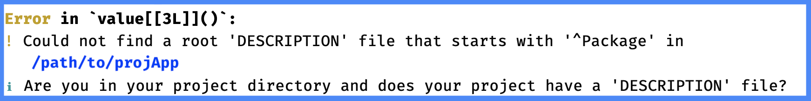

<R package>/
├── DESCRIPTION
├── <R package>.Rproj
├── LICENSE
├── LICENSE.md
├── NAMESPACE
├── NEWS.md
├── README.Rmd
├── README.md
├── renv.lock
├── R/
├── man/
├── tests/
├── data/
├── data-raw/
├── vignettes/
├── inst/
└── renv/
Packages
Caution!
This section is currently under development. Thank you for your patience.
This chapter dives into the makings of R packages. We’ll start by covering the differences between R projects, R packages, and app-packages. Then we’ll dive into what’s required to convert an R project into an R package.
The final section of this chapter will cover the usethis::create_package() function, which can be used to create new shiny app-packages and convert existing shiny projects into app-packages.
Projects, packages, and app-packages
Before we start, we should establish some ‘operational definitions’ of what I mean by the terms ‘project’, ‘package’, and ‘app-package’.
I’ll use color to differentiate shiny app projects, R packages, and app-package.
Project: I consider a project to be any directory of files requiring R (the binary downloaded from CRAN with a version number and neat names like, ‘R 4.3.1 “Beagle Scouts” released on …’) to execute with an RStudio/Posit workbench project file (
.Rproj).Package: I’ll be using the term package to describe a directory of functions, documentation, or data that can be installed and loaded into an R session. A package includes the necessary dependency management (
NAMESPACE) and metadata files (DESCRIPTION) and has access to the package development tools in RStudio/Posit Workbench.App-package: an app-package (which you have probably already guessed) is a package containing a shiny application. App-packages have all of the functionality of a standard R package, but also contain the files and folders required to successfully develop, run, and deploy a shiny app.
R Packages & Posit Workbench
Posit Workbench (formerly RStudio) is a popular integrated development environment (IDE) streamlining many R package development tasks. I’ve purposely connected Posit Workbench to the definitions above for package and app-package–specifically, the package development tools provided in the Build pane and devtools.
However, developing R packages in Posit Workbench (or using .Rproj files) is not required. There are alternative package development tools and processes outside of Posit Workbench, and many developers employ these setups.
Package development outside Posit Workbench would look almost identical to development in the IDE:
Create the package structure (
R/folder for.Rscripts,man/folder for documentation,data/folder for datasets, etc.)Add
DESCRIPTIONandNAMESPACEfiles, etc.Ensure the package can be installed and loaded into an R session.
It’s also possible to use many of the development workflow functions we’ll cover here outside of the IDE (roxygen2::roxygenize(), devtools::check(), devtools::install(), etc.).
The previous chapter covered a few practices to adopt during shiny development that improves the extensibility of your app project to an app-package (these are summarized in the callout box below).
Shiny ‘pre-package’ practices
-
Folders
www: can be used to store static resources (images, CSS files, JavaScript)-
R/: any.Rfiles in theR/folder will automatically be loaded with your app when it’s run.- Converting the code in
app.Rinto separate functions (i.e., modules and standalone app functions) also allows you to develop and debug the code independently.
- Converting the code in
-
Files
-
DESCRIPTIONfiles store metadata and include fields for application deployment (i.e.,DisplayMode: Showcase)
-
README.mdfiles can document application descriptions, purposes, requirements, etc.
-
-
Dependencies
-
renvcan be used to help manage app dependencies.- Run
renv::status()&renv::snapshot()to record dependencies in the lock file.
- Run
-
App-packages: Motivation
There are multiple reasons for deciding to develop an app-package: your app project might have to be in a package structure due to specific organizational needs or practices around deploying applications, or maybe you’ve been convinced it’s the best practice for improving the shareability/reproducibility of your app project.
Regardless of the reason, you’ve likely found yourself in one of two circumstances:
You want to develop a new shiny app, but want it structured as an app-package.
You’ve already developed a shiny app project, but now you need to convert it to an app-package.
R package vs. shiny project
Below is a folder tree with some of the typical files and folders found in R packages:
R packages can be easily shared, reused, and reproduced because they all have a familiar structure, and each folder and file plays an essential role in extending R’s capabilities.
At first glance, the contents above can seem daunting when compared to the folders and files that currently exist in your app project (like projApp below):
projApp/
├── DESCRIPTION
├── R/
│ ├── mod_scatter_display.R
│ ├── mod_var_input.R
│ └── utils.R
├── README.md
├── app.R
├── movies.RData
├── projApp.Rproj
├── rsconnect/
└── www/
└── shiny.png
4 directories, 9 filesFortunately, app-packages don’t require all the files and folders displayed above to gain the functionality and benefits of an R package.
This chapter will cover what’s required in all R packages, so you can handle both creating new app-package and converting existing shiny projects into app-package.
What makes an R package?
If you’ve read R packages, 2ed or Mastering Shiny, you might recall encountering one (or both) of the following quotes,
‘Every package must have a
DESCRIPTION. In fact, it’s the defining feature of a package (RStudio anddevtoolsconsider any directory containingDESCRIPTIONto be a package)’ - R Packages, 2ed (Chapter 9,DESCRIPTION)‘all a project needs to be a package is a directory of
R/files and aDESCRIPTIONfile.’ - Mastering Shiny (Chapter 20, Packages)
If you’ve been following the code in projApp, the quotes above should confuse you. The projApp shiny project has a DESCRIPTION file and an R/ directory, but projApp is not a functioning package.
As we defined above, a functioning package can be installed and loaded into an R session and has access to the Build pane in the IDE.
devtools functions
devtools simulates installing and loading with load_all() (we’ll cover this function extensively in the devtools chapter),
But when we attempt to load the code in the R/ folder with load_all(), we see the following error:
install.packages("devtools")
library(devtools)
devtools::load_all()
devtools is looking for the Package field in the DESCRIPTION fileThe Build pane
When opened, functioning packages have access to the Build pane, which allows us to iterate between loading, installing, and testing quickly. But when projApp is opened, the Build pane is not displayed in the IDE:

projApp IDEAs we’ve just learned, the presence of the DESCRIPTION file and an R/ folder are insufficient to turn your app project into a package (or an app-package).
What really makes an R package?
For our purposes, I’ll rewrite the minimum requirements for creating a ‘functional’ R package:
“A project needs a
DESCRIPTIONfile with specific fields, a directory ofR/files, and a properly configured.Rprojfile to be a package.” - Me
Let’s see how each of these requirements works together to convert the contents of projApp from a project into a package.
DESCRIPTION fields
The official R documentation lists the following required fields for the DESCRIPTION in R packages:
The ‘Package’, ‘Version’, ‘License’, ‘Description’, ‘Title’, ‘Author’, and ‘Maintainer’ fields are mandatory.
Below is an example DESCRIPTION file for projApp with the mandatory fields:

The code for this section was pushed to the [04_description] branch of the [projApp] repo.
Package: projApp
Version: 0.0.0.9000
Type: Package
Title: movies app
Description: A movies data shiny application.
Author: John Smith [aut, cre]
Maintainer: John Smith <John.Smith@email.io>
License: GPL-3
*leave empty final line*Author and Maintainer fields
Note that the Author and Maintainer fields require additional information beyond first and last name (i.e., John Smith). These can be created with the utils::person() function:
After adding the mandatory fields to the DESCRIPTION file in projApp, load_all() runs without the previous error, but the IDE still doesn’t display the Build pane:

projApp IDEProject options
i.e., the .Rproj file
.Rproj files are plain text files with various settings for the IDE. We ran devtools::load_all() above without the presence of the Build pane is because the IDE displays the Build pane after reading the fields in the projApp.Rproj file.
The quickest way to access the fields in the .Rproj file is under Tools > Project options.
Default project options
Tools > Project options provide access to the project-level options. For example, fields 2 - 4 are available under General, 5 - 8 affect the Code options, and the final two fields deal with Sweave.

projApp.Rproj fieldsprojApp.Rproj fileThese are the default settings created when we selected the Shiny App project from the New Project Wizard in the last chapter.
Build tools
If you’ve read the What makes an RStudio Project? section of R Packages (2 ed), you’ll notice a few differences between each .Rproj file (I’ve placed the files side-by-side so you can compare them below):

.Rproj filesprojApp.Rproj file and .Rproj file in R Packages, 2edI’ve circled the fields in the R Packages, 2ed .Rproj file that illustrate it’s configured to work with a package. Note that in projApp, the Project build tools are initially set to (None) under Build Tools:

projApp.Rproj build toolsprojApp.Rproj fileThis setting should help explain the absence of any package development fields in the projApp.Rproj when we compared it to the version in R Packages, 2ed (i.e., BuildType, PackageUseDevtools, PackageInstallArgs, and PackageRoxygenize).
Changing the Project build tools option to Package will set the default Build Tools options:

The links between the Build Tools options and fields in projApp.Rproj are in the figure below:

projApp.Rproj build tool fieldsprojApp.Rproj fileBuildType: Packagetells the IDEprojAppis a package and triggers the Build pane.PackageUseDevtools: Yeslinks the options in the Build pane to thedevtoolspackage.The
PackageInstallArgsare complicated, but I’ve included some information about them in the callout block below (and you can read more in the official R documentation)-
The fourth option (
PackageRoxygenize) is available under Generate documentation with Roxygen > Use roxygen to generate- These options affect the documentation in your package. To match the example from R Packages, 2ed above, make sure Rd files, Collate field, and NAMESPACE file are selected and click OK.

PackageRoxygenize in .Rproj fileroxygen2 build settingsAfter clicking OK, the IDE will automatically reboot, and the additional fields will be added to the bottom of the projApp.Rproj:
Version: 1.0
RestoreWorkspace: Default
SaveWorkspace: Default
AlwaysSaveHistory: Default
EnableCodeIndexing: Yes
UseSpacesForTab: Yes
NumSpacesForTab: 2
Encoding: UTF-8
RnwWeave: Sweave
LaTeX: XeLaTeX
BuildType: Package
PackageUseDevtools: Yes
PackageInstallArgs: --no-multiarch --with-keep.source
PackageRoxygenize: rd,collate,namespace
What is
--no-multiarch --with-keep.source?
--no-multiarch: refers to the option for the package installer to only compile the package for the architecture of the current R session. By default, R tries to compile packages for 32-bit and 64-bit architectures if running in a 64-bit R session on Windows. This flag can help avoid problems if a package can only be compiled on one architecture. Read more here.--with-keep.source: In R, when a function is created, its body can be stored in two ways: 1) as a parsed but unevaluated expression and 2) as a character string containing the function’s source code. By default, only the parsed expression is kept. If–with-keep.sourceis specified, R will also keep the original source code as a character string, which can be helpful for debugging and for tools that analyze or modify source code. Read more here.
Build pane
When the new session starts, the new project-level options activate the Build pane in the IDE.

When the IDE reboots, I can see the Build pane has been added, and I can check the package functionality by loading the code with Build > Load All

R/ folderdevtools::load_all()I should see the following in the Console:
ℹ Loading projAppThere you have it–projApp is a functional package!
Functional R packages

DESCRIPTION and Build pane)A functional R package:
The
DESCRIPTIONfile contains the seven mandatory fields (Package,Version,License,Description,Title,Author, andMaintainer), which make it possible to run the necessarydevtoolsfunctions.The
.Rprojfile contains the three package configuration fields (BuildType: Package,PackageUseDevtools: Yes, andPackageInstallArgs: --no-multiarch --with-keep.source), which makes the Build pane accessible and functional.
The items above will create a functional R package, but these are the first steps (we haven’t developed anything yet!) on our way to an app-package.
Think of the two items above as a two-part process: the official R documentation requires the DESCRIPTION fields (and hence, devtools), and the IDE requires .Rproj fields to trigger the Build pane.
For more information on the topics in this chapter, you should read Writing R Extensions (the official documentation for creating R packages) and R Packages, 2ed.
Creating packages with create_package()
The Posit documentation lists the following ways to create R packages,
In RStudio, do File > New Project > New Directory > R Package. This ultimately calls
usethis::create_package(), so really there’s just one way.
While this information isn’t incorrect, we just demonstrated it’s possible to create a package without the usethis::create_package() function. Still, if you’re looking for a way to quickly create or convert your app project into an app-package, using create_package() is a great option.
This function is covered in the ‘Fundamental development workflows’ chapter of R Packages, 2ed. I’ve provided some suggestions below for using create_package().
New app-packages
If you want to create a new shiny app-package, but haven’t written any code, you can create it with the create_package() function from the usethis package.
First, install devtools:
install.packages("devtools")
library(devtools)devtools automatically loads usethis
Loading required package: usethisAssuming your current working directory is where you want your new app-package, call usethis::create_package() with the path argument set to getwd()
usethis::create_package(path = getwd())This call launches a series of actions:
-
First, the active project is set to whatever was given to the
pathargument.✔ Setting active project to 'path/to/newApp' -
The
R/folder andDESCRIPTION/file are created:✔ Creating 'R/' ✔ Writing 'DESCRIPTION' -
The
NAMESPACEand.Rprojfiles are created:✔ Writing 'NAMESPACE' ✔ Writing 'newApp.Rproj' -
The
.Rprojis added to the.Rbuildignorefile, the.Rproj.userfolder is added to the.gitignoreand.Rbuildignorefiles.✔ Adding '^newApp\\.Rproj$' to '.Rbuildignore' ✔ Adding '.Rproj.user' to '.gitignore' ✔ Adding '^\\.Rproj\\.user$' to '.Rbuildignore' -
A new session is opened from the new
.Rprojfile:✔ Opening 'path/to/newApp/' in new RStudio session
When the new session opens, newApp has the following contents:
newApp/
├── .Rbuildignore
├── .Rproj.user/
├── .gitignore
├── DESCRIPTION
├── NAMESPACE
├── R/
└── projApp.RprojYou’re now free to develop newApp. Store and document any .R files in the R/ folder, edit the DESCRIPTION file with details about the application, read through R Packages and Mastering Shiny, and add the shiny code to complete your app-package
Converting existing app
If you already have a shiny app project that needs to be converted into an app-package (like the app files stored in the 03_projApp branch), you can also use create_package(path = getwd()) in your root folder, but I recommend using the following arguments:
DESCRIPTION arguments
-
fields: these are arguments passed tousethis::use_description(). If thefieldsargument is empty, a boilerplateDESCRIPTIONfile is created (similar to this one).These boilerplate fields in the
DESCRIPTIONwork, but I’ve found some of the fields are unnecessary (i.e., I’ve never neededAuthors@R:orORCID) and inevitably require revision, so I’d prefer to handle this during the creation process (and remove the risk of forgetting to change it later).All fields should be passed in a
list()asfield = 'value'pairs.
usethis::use_description( list(Package = 'projApp', Version = '0.0.0.9000', Title = 'movies app', Description = 'A movie-review shiny application.', "Authors@R" = NULL, Author = utils::person( given = "John", family = "Smith", email = "John.Smith@email.io", role = c("aut", "cre")), Maintainer = utils::person( given = "John", family = "Smith", email = "John.Smith@email.io"), License = "GPL-3"))-
A few fields require specially formatted values (see the
utils::person()examples below).
-
Two additional arguments from
use_description()are passed tocreate_package():check_name: verifies your app-package name is valid for CRAN, so we can set this toFALSE(unless you’re planning on submitting to CRAN)roxygen2: isTRUEby default and adds the fields required to useroxygen2(which I won’t cover here because we’ll cover documentation in-depth in a future chapter).
WARNING: Don’t use
usethis::create_package('.')!
When converting your existing shiny app project into am app-package with usethis::create_package(), don’t use '.' in the path argument:
usethis::create_package('.')This will return the following warning about creating nested projects, and ask if you want to proceed anyway:
New project 'projApp' is nested inside an existing project
'./', which is rarely a good idea. If this is unexpected,
the here package has a function,
`here::dr_here()` that reveals why './' is regarded as a
project.
Do you want to create anyway?
1: Yes
2: No way
3: Not nowWe can avoid this warning altogether by passing the getwd() to the path argument, so I recommend cancelling the project creation:
Selection: 2
Error: Cancelling project creation.IDE arguments
rstudio: adds the necessary Build Tools fields in the.Rprojfile (leave asTRUE)open: can be set toFALSEbecause we don’t need RStudio/Posit Workbench to open in a new session
usethis::create_package(
path = getwd(),
fields = list(Package = 'projApp',
Version = '0.0.0.9000',
Title = 'movies app',
Description = 'A movie-review shiny application.',
"Authors@R" = NULL,
Author = utils::person(
given = "John",
family = "Smith",
email = "John.Smith@email.io",
role = c("aut", "cre")),
Maintainer = utils::person(
given = "John",
family = "Smith",
email = "John.Smith@email.io"),
License = "GPL-3"),
roxygen = TRUE,
check_name = FALSE,
rstudio = TRUE,
open = FALSE)After running usethis::create_package() with the arguments above, the IDE will present us with a few prompts to confirm:
Overwrite pre-existing file 'DESCRIPTION'?Overwrite pre-existing file 'projApp.Rproj'?The app-package structure is below:
├── DESCRIPTION
├── NAMESPACE
├── R
│ ├── mod_scatter_display.R
│ ├── mod_var_input.R
│ └── utils.R
├── README.md
├── app.R
├── movies.RData
├── projApp.Rproj
└── www
└── shiny.png
3 directories, 10 filesThe DESCRIPTION file (shown below) has a few additional fields (Encoding, Roxygen, and RoxygenNote) we didn’t include when we converted projApp above. We will cover these in the upcoming chapters.
Package: projApp
Title: movies app
Version: 0.0.0.9000
Author: John Smith <John.Smith@email.io> [aut, cre]
Maintainer: John Smith <John.Smith@email.io>
Description: A movie-review shiny application.
License: GPL-3
Encoding: UTF-8
Roxygen: list(markdown = TRUE)
RoxygenNote: 7.2.3
The code for this section was pushed to the [06_create-package] branch of the [projApp] repo.
Recap
This chapter has covered the mandatory fields in the DESCRIPTION file and the package configuration fields in .Rproj. We also covered creating and converting projects using the usethis::create_package() function.
Recap: Packages!
-
The
DESCRIPTIONfile ultimately controls whether you have a functional shiny package.- The mandatory fields are
Package,Version,License,Description,Title,Author, andMaintainer.
- The mandatory fields are
usethis::create_package()can be used to create a new package and to convert an existing shiny project into a shiny app-package.-
The IDE reads RStudio (
.Rproj) files and determines R session settings at the project-level (i.e., working directory, workspace, history, code formatting, etc.)- Package development settings can be accessed via Project Options > Build Tools.
In the next chapter, I’ll cover how you can Install, Document, Test, and Check your package with a single click!
end packages.qmd